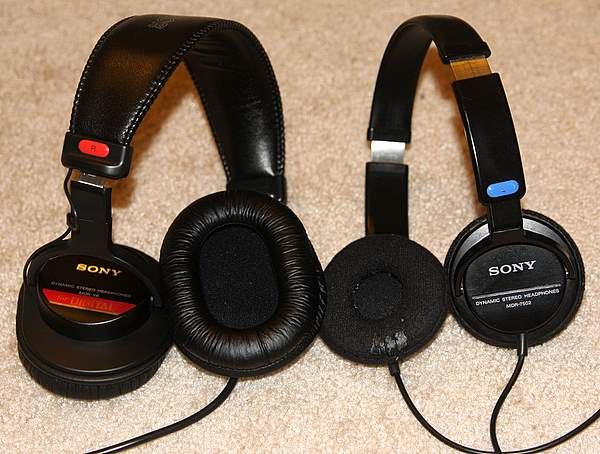
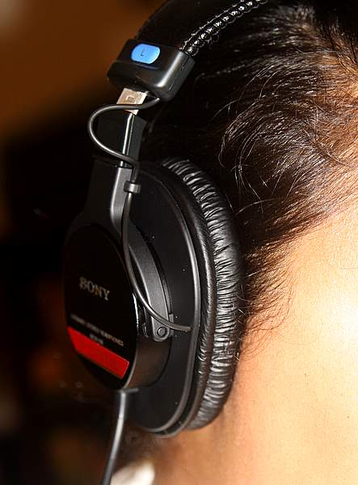
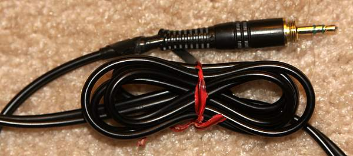
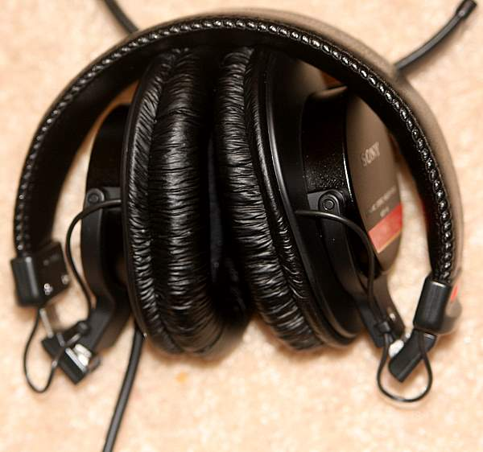
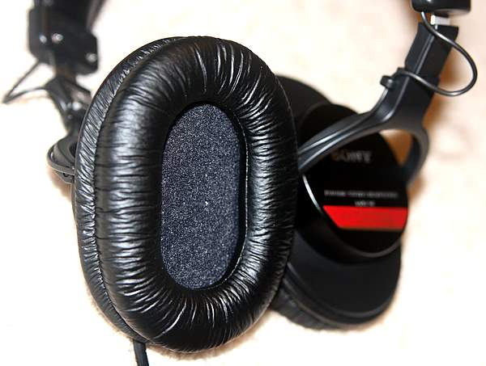

Review Of Sony MDR-V6 Headphones

I’ve been using Sony MDR7502 Headphones (right in the image above) for the past six years. They came with my supply kit that I received before my first year at the Art Institute of Philadelphia. For the last two and a half years I have put 2 hours of a day, 5 days a week of use into them as they were an integral part of my commute. The pads started deteriorating and the end of the cable started to fray. But what pushed me to buy a new pair of cans was my new job.
When I was at U.S.News & World Report I had my own office so I could listen to music through speakers. My new job at the Pew Research Center has me in a cubicle, so headphones are a necessity.
My old headphones sit right on top of my ears so after about 2 hours of use, my ears begin to throb. The Sony MDR-V6 appealed to me because they fit over the ear which should be more comfortable to wear for longer periods of time.

And the $75 price tag is a bargain considering I would need to wear these for eight hours every work day. I’ve been using them for the past week and here are some take-aways:
- The bigger cups are a lot more comfortable than headphones that sit right on the ear. They also block out more noise which is a big plus while riding the Metro.
- My old headphones sound a bit better with a fuller, deeper sound especially for speech like podcasts. To be fair the MDR-V6’s still need a couple hundred more hours to break in properly.
- The coiled-cord of the MDR-V6’s is a heck of a lot easier to manage than the straight cable of the MDR7502’s. Straight cables tend to get twisted easily. Both headphones have super long cords that can catch on things when walking around. I would tie up the straight cable into a figure 8 with a twisty tie to take up some of the slack. 
The coiled cord can be gathered up in my pocket with my Zune without a problem. - The plug of the MDR7502 headphones is connected to the cable with a plastic webbing. When the webbing breaks, the connection can loosen which requires a bit of fiddling with to keep the connection sounding good. The MDR-V6 fixes that problem (hopefully) with a flexible, rubber tube at the base of the connector.
- The MDR-V6’s fold up for easy storage. It doesn’t take much effort to make the headphones collapse and as a result I found them configured in weird positions when carrying them in my backpack. It’s a little annoying to have to untwist and unfold everything before you can use them. 
- More comfortable headphones come at the price of fashion. The MDR-V6 headphones are a bit bulky which is a fair trade-off for the superior comfort and build quality. If looking like a DJ on your morning commute isn’t your thing, then studio headphones in general aren’t for you.
Overall I am very happy with my bigger, sturdier headphones. Even though they don’t sound as good as my Sony MDR7502’s they still sound better than most any other headphones out there. I didn’t buy these with sound quality being the number one deciding factor; I bought them for comfort. There are probably much better sounding headphones that cost a heck of a lot more money. The Sony MDR-V6 headphones are great for my everyday listening needs at work and on my commute.

Other Reviews of Sony MDR-V6 headphones:
- Amazon.com
 – 4.5/5, 276 reviews
– 4.5/5, 276 reviews - Audioreview.com – 4.12/5, 99 reviews
- CNet.com – 4.5/5, 12 reviews

Thanks for the review, ordering them today. Have you considered replacing the pads for your old pair? I know for a fact that the Sony MDR-V6 are replacable. Happy Thanks Giving.
Reply
I haven’t tried replacing the pads on the old headphones but I don’t really think that would solve my problem as the circumference is too small causing the headphones to press directly against my ear. The MDR-V6 fits comfortably around my ear and after a couple months of breaking them in, I barely notice they’re there. I’m so happy with these headphones!
I have these same Sony V6s but I’m not agree with you, because I found them very uncomfortable after wearing them for more than 30 minutes, my ears sweat and get warm and red.
There sound quality is very good and I bought them especially because they produce really flat frequency response. but they are not as much comfortable as you said.
Reply
Some people swear by the Beyerdynamic EDT 200 Velour Padded Earcushions for DT250, DT280, Sony MDR7506 and V6 http://www.amazon.com/gp/produ.....038;sr=8-1
[…] I’m at my computer, and on my ride back home. One would expect the pads to slowly breakdown after almost 2.5 years of heavy use. So I finally broke down and ordered replacement headphone pads.Amazon has them for […]
I’ve had ~6 pairs of over-the-ear headphones and the Sony MDR-V6’s are my favourite, especially for the price. Whilst I appreciate your review if you comment on the sound quality after just a week of use you should follow it up your thoughts after you’ve run them in. As you said 200 hours would be a good milestone.
I’ve had mine for over a year now and spend up to 30 hours a week in them, I love them. I can wear them for sometimes 8 hours (with small breaks). I kick myself when I forget to take them to work on Mondays or to bring them home on nights I would like to use them at home, I’ll probably buy another pair & some ear pads too and at $75 that’s a simple choice, so much better than a $300 pair that I would not feel safe leaving at work.
Reply
After 5 years, these are still my sole headphones. I wear them all day at work and on my commute home and they still sounds just as great. I’ve had to replace the audio plug after the original one bent after dropping my media player.
I also have to replace the ear pads every year and a half or so. I found it best to bite the bullet and get Sony’s overpriced earpads. They fit the best and considering how much I use these hedphones the overpriced earpads still make owning these cans a great value for the high quality.